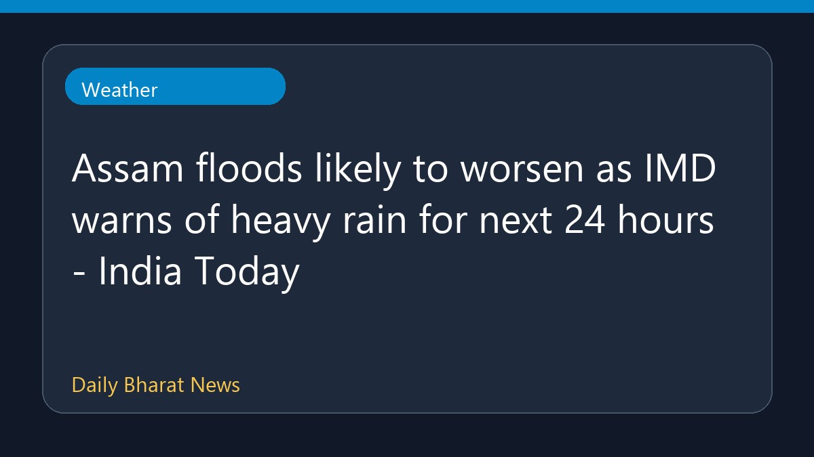

असम में भारी बारिश की चेतावनी, और बिगड़ सकते हैं बाढ़ के हालात

भारत मौसम विज्ञान विभाग (IMD) की चेतावनी के अनुसार, असम में अगले चौबीस घंटों के दौरान भारी बारिश होने की संभावना है। इस चेतावनी के बाद राज्य में मौजूदा बाढ़ की स्थिति के और अधिक गंभीर होने की आशंका जताई जा रही है। मौसम विभाग के पूर्वानुमान को ध्यान में रखते हुए संबंधित एजेंसियों द्वारा स्थिति पर लगातार नजर रखी जा रही है। फिलहाल इस संबंध में विस्तृत जानकारियाँ सीमित हैं।
मूल स्रोत: Weather News Sources
Assam floods likely to worsen as IMD warns of heavy rain for next 24 hours - India Today ↗
Assam floods likely to worsen as IMD warns of heavy rain for next 24 hours - India Today ↗